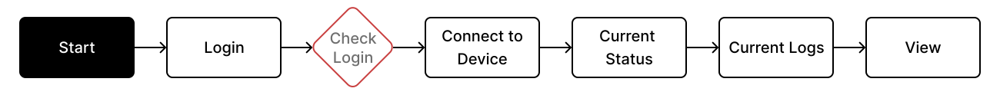
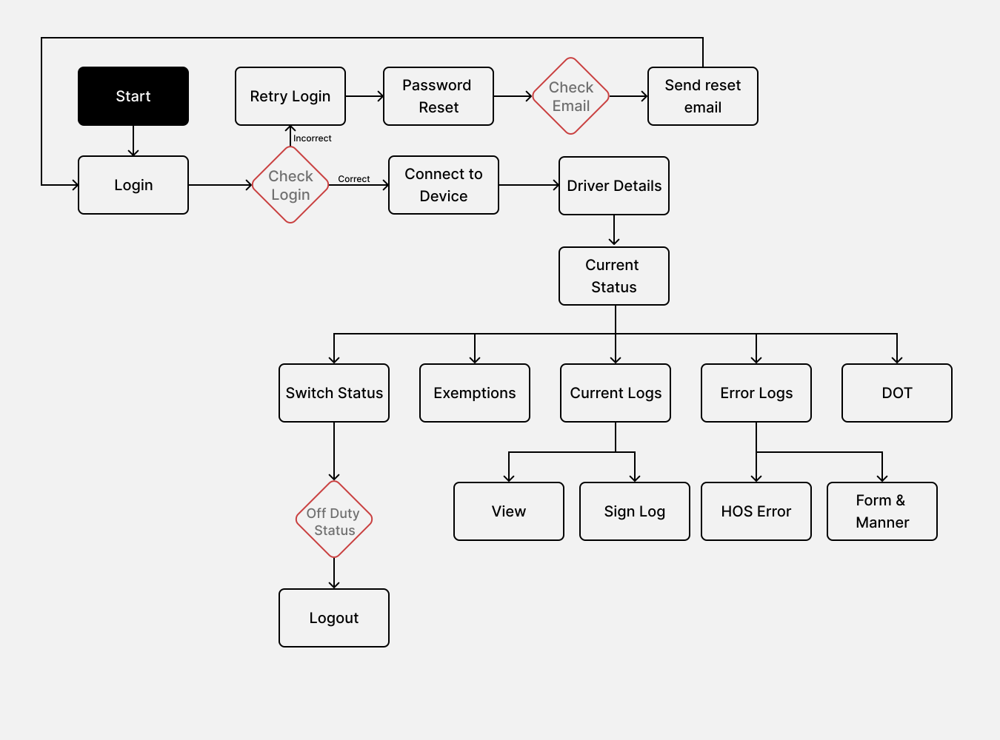
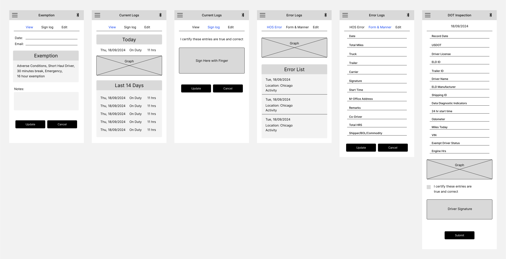

Let's connect
Let's connect

T-TMS
Project
Red Dog Logistics
Role
Product Designer / Researcher
Platform
Dashboard / Mobile App → IOS & Android
Tools
Figma, Miro, Survey Monkey, Jira, Teams
The TMS Fleet Management System is designed to help carrier companies and truck drivers comply with FMCSA Hours of Service (HOS) regulations, ensuring safer roads and reducing penalties. By automating data collection from BLE6 and IOA6 truck devices, the system minimizes errors, simplifies compliance processes, and prevents driver fatigue-related accidents. With real-time tracking of driving hours, automated status updates, and compliance violation alerts, the platform streamlines operations for carrier companies while protecting drivers from exploitation.
I led the end-to-end design process for the TMS Fleet Management System, from discovery to delivery, ensuring the solution aligned with FMCSA regulations while solving real user challenges. This included planning and conducting user research, interviews, and data analysis to uncover compliance and operational pain points, then translating those insights into clear problem definitions that guided ideation. I created user flows, information architecture, wireframes, and high-fidelity prototypes, iterating through usability and A/B testing to refine the experience. Partnering closely with Product Managers, Engineers, and UI Developers, I ensured that business goals and technical constraints were met without compromising usability. My work spanned research, strategy, interaction design, visual design, and validation, resulting in a user-centric, regulation-compliant platform that improved safety, compliance, and operational efficiency.
01
Discovery Stakeholder Interviews User Interviews Scoping
02
Define Affinity Mapping Persona Journey Map
03
Ideate User Flow Information Architecture
04
Design Initial Sketches Wireframes Prototypes
05
Validate Usability Testing A/B Tests Card Sorting
Carrier companies and truck drivers struggled with fragmented systems that made compliance difficult, increased safety violations, and led to penalties. Drivers lacked an intuitive way to track Hours of Service (HOS), resulting in excessive working hours, fatigue-related incidents, and violations due to missed breaks or inaccurate logs. Carrier companies faced challenges obtaining real-time driver data, complicating audits and increasing fines for incomplete records. Without automated logging and alerts, frequent errors and manual corrections reduced efficiency and safety. The goal was to design a research-driven and user-centric solution that simplified compliance, protected drivers from exploitation, ensured accurate reporting, and improved fleet management.
üëâ Carriers lacked tools to streamline operations, ensure compliance, and enhance road safety
To understand the challenges faced by truck drivers and carrier companies, I conducted in-depth user research, including user interviews, surveys, and industry analysis. The goal was to identify pain points in compliance tracking, data management, and driver safety.
I interviewed 15 truck drivers and 4 carrier company representatives to uncover their day-to-day struggles with logging data, compliance, and fatigue management.
I used Affinity Mapping to analyze user research, grouping insights from interviews and surveys to identify key patterns. This helped uncover pain points, prioritize solutions, and align design decisions with user needs, compliance challenges, and operational inefficiencies.
A significant portion of drivers, approximately 48% of drivers reported difficulties using mobile apps for logging hours, leading to manual errors and compliance risks
90% of carrier companies faced issues with inaccurate driver data, making audits difficult and increasing the risk of penalties

✔ Automated data logging and real-time alerts can prevent HOS violations and improve driver safety
✔ Simplifying complex compliance forms with auto-fill suggestions can reduce errors and penalties
✔ Drivers need flexibility to edit their status (with verification) to prevent incorrect log entries
✔ Carrier companies require better visibility into driver data to improve compliance and operational efficiency

After conducting user research, we received valuable feedback from our users that helped refine our personas. For instance, Tom expressed frustration about submitting his information while driving, leading to unavoidable errors in data. On the other hand, Lisa, representing the carrier company, highlighted that navigating the complex web of regulations governing trucking operations can be challenging and time-consuming.

I also created a user journey map to better illustrate the difficulty faced by carrier companies and truck drivers trying to navigate through new process.
User pain points were carefully considered during the development of the initial user flow for the primary function of the application. At this stage, a single main flow was identified, which was further refined through design iterations.
I would like to change driver status when I start my duty or when I take breaks.
I would like to see current logs to check total miles and driving hrs.
I would like to report an error.
We designed an initial architectural framework outlining the application's structure, informed by user stories and intricately mapped user flows, ensuring optimal user experience alignment.
Following interactions with users and insights gained from user interviews, I commenced the process of translating conceptual ideas into visual sketches.


I translated my concept into an interactive digital low-fidelity prototype and tested it with 8 potential users to gather feedback.
The final prototypes were shaped by extensive user research, affinity mapping, and iterative testing to ensure clarity, efficiency, and compliance with FMCSA regulations. Every design decision was informed by real user pain points, from simplifying complex forms to automating HOS tracking. The result is an intuitive, research-driven solution that enhances safety, minimizes compliance risks, and improves operational efficiency for both drivers and carrier companies.

As a group, we conducted user testing with a pool of 15 individuals. Subsequently, I facilitated a card sorting activity to discern recurring themes and insights from their feedback.
The final design increased the user satisfaction rate by 35%. Quoting one of the early user testing participant David Miller, "This design feels more intuitive and supportive reducing overheads."
Throughout my time working on TMS, I've learned the importance of gathering as much user feedback in the early phase of a project, by fostering open communication channels and working closely with stakeholders. As user needs evolved and new insights emerged, being able to pivot and iterate on the design ensured that we stayed responsive to user feedback and delivered a product that met their expectations.